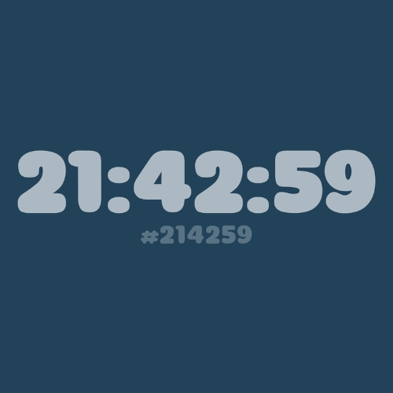
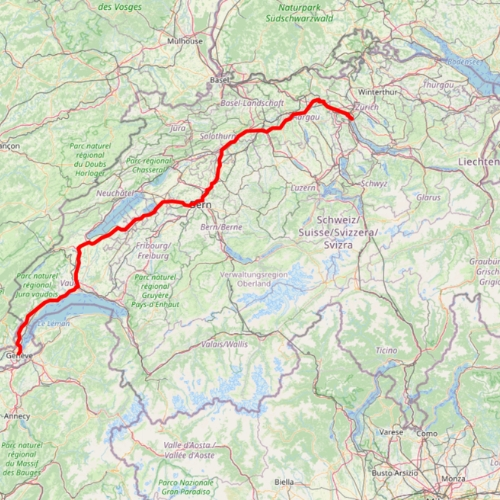
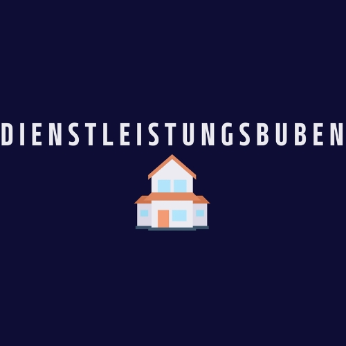

About Me
My name is Andrej Bajusic and I currently attend a district school in Aargau, Switzerland. I am very interested in computer science and would like to become an IT specialist myself. I currently attend the talent development programme of ICT-Scouts and completed the seminar "Hack an App" by Ti&m and BIT (Federal Office of Information Technology and Telecommunications).
Skills
I can code in HTML and CSS quite proficiently. I am also learning JavaScript so I can make real, responsive Websites and I am also learning Python.
Projects
I have multiple projects that you can view on my GitHub. Here are some of my fav projects.
Moody Clock
This clock uses the current time as a hex color code for the background. For example, 12:34:56 becomes #123456. I made this website using HTML, CSS and JavaScript. The design is simple and minimal, and I like it because it looks nice.

Cartons

Cartons is a small wrapper between Folium and OSRM that lets you generate routes and maps. Kinda like Google Maps! I really like it because you can create interesting maps and see the results visually, and because other people can actually use it. Of course, you can check it out on GitHub. It's also open-source under the MIT License. ^^
Dienstleistungsbuben
I started the Dienstleistungsbuben to help people in our local neighborhoods and to make some money. It's a small business where my friends and I offer services like IT support (that's me ;-)), gardening, and much, much more. You can check out our website. And of course... even your local neighborhood business is open-source! You can find the code on GitHub. ^^
